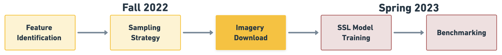
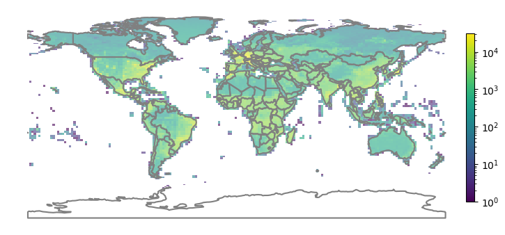
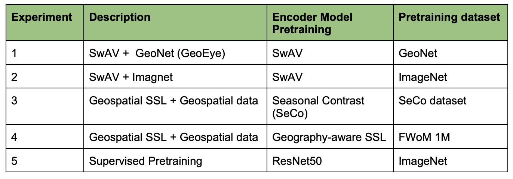
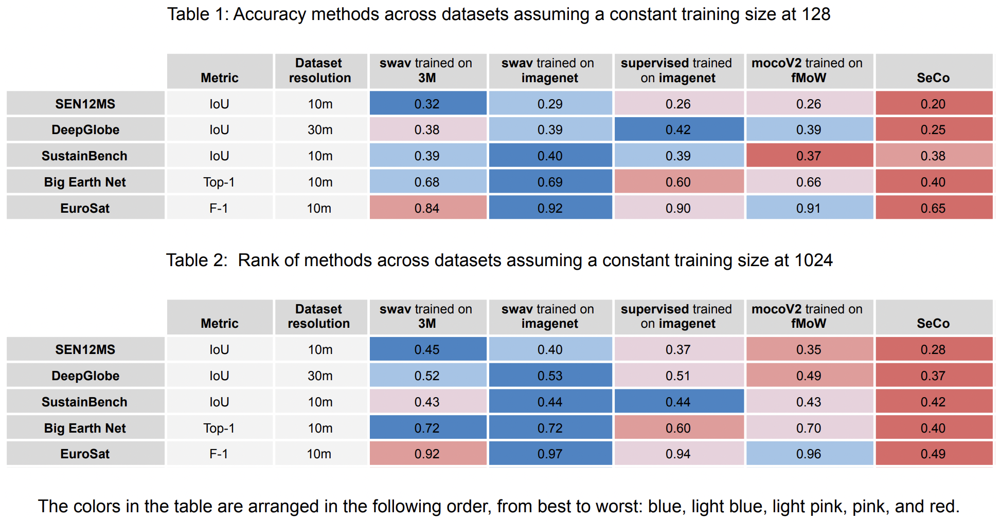

Motivation
Motivation


Geospatial data has become increasingly important across disciplines as the availability of remote sensing data, including satellite imagery, proliferates. Large, continuous streams of data are publicly available from satellites such as Sentinel and Landsat. Traditionally, this data must be labeled to be used for machine learning models. However, labeling large datasets is expensive, requiring a lot of time and labor. Many large and labeled data sets are not diverse in geographic location and so cannot be generalized to the world. Currently, using a model pre-trained on imageNet can mitigate the need for large amounts of labeled data. But this method has limited application to remote sensing tasks due to the unique characteristics of satellite images. Recent research has shown that self-supervised learning (SSL) techniques have the potential to develop robust feature representations of geospatial imagery data with minimal task-specific labeled data, including Caron et al. (2020), Chen et al. (2020), and Calhoun et al. (2022). We present GeoNet, a dataset that exceeds the scale and diversity of any prior datasets, and evaluate its usefulness by comparing the performance of SSL models pre-trained using three different methods: SSL pretraining on ImageNet, SSL pretraining on GeoNet, and SSL pretraining on ImageNet further trained on GeoNet.
Key Contributions
Key Contributions
Develop GeoNet
GeoNet is the largest and most diverse dataset to be curated for SSL in remote sensing. It contains over 10 million images across geographies, cities, rural regions, biomes, areas impacted by global change, across 8 half-seasons — the first and largest ever to capture geospatial, temporal, and semantic diversity for remote sensing data.
Test different training paradigms of SwAV on GeoNet
We test different training paradigms of SwAV on GeoNet to find that GeoNet outperforms state-of-the-art models in three out of five downstream recognition tasks and is competitive with other SSL models
Publish GeoEye
GeoEye, a large pre-trained encoder for RGB imagery, significantly reduces the quantity of labeled data required for downstream recognition tasks, making recognition methods far more accessible and compute-efficient to researchers
Our work follows the below 5 stages:

Historical uses of remote sensing imagery for machine learning have primarily involved supervised learning: the use of labeled input data to train a model to perform classification tasks. This requires large, labeled remote sensing imagery datasets. Manually labeling these datasets is extremely time-consuming, requires expert knowledge, and must be repeated for each new dataset. (ImageNet, one of the largest and most widely used natural image recognition datasets with 14 million training images, required years of human labeling!) Furthermore, existing datasets of this nature are limited in geographic diversity, representing mainly Europe and America. Training machine learning models on data that covers only the Global North limits their transferability to other parts of the world.
Self-supervised learning (SSL) methods, which train a model to perform classification tasks without the need for labeled input data, address these limitations and remove the need for large, task-specific labeled datasets. Through pre-training on large, diverse, unlabeled datasets, self-supervised models learn to extract robust, highly transferable features that can then be applied to a wide range of other tasks and domains. This is highly useful for remote sensing applications.
One popular SSL technique is contrastive learning, in which a model is trained to discriminate between positive examples (pairs of data that are similar in some way) and negative examples (pairs of data that are dissimilar). Many self-supervised learning models trained using contrastive learning have been shown to close the gap with and outperform supervised learning models. One popular SSL model trained using contrastive learning is SwAV (Swapping Assignments between Views), which eliminates the need for pairwise comparisons by using clustering-based methods that compare multiple views of the same image.
However, commonly used pretraining datasets for self-supervised image classification and object detection tasks, such as ImageNet, have limited application to remote sensing tasks because of satellite images’ unique characteristics. (Images taken by satellites capture observations from above, come in multi-spectral bands instead of RGB, and do not include a unique element). We are aware of no equivalent to ImageNet that is specifically intended for pre-training for use with satellite imagery data.
GeoNet Dataset
GeoNet Dataset

The graph shows how we drew samples from different locations covering the entire globe except
Antarctica, demonstrating the geospatial diversity of GeoNet.
To create an immense dataset that captures geospatial, temporal, and semantic diversity, we select features that cover diversity across geographies (all continents and countries), cities (all major cities are included), rural regions (across all continents and countries), biomes (forests, deserts, tundra, etc.), areas impacted by global change (floods, fires, storms, etc.), across 8 half-seasons.
Data was collected from 7.2M unique 2.24km x 2.24km areas on all continents except Antarctica. Urban and rural areas comprise 60% of the 10 million images, 19% for natural disaster areas, 20% for land use and cover, and 1% for specific built environment features. Furthermore, GeoNet is temporally diverse as it involved extracting Sentinel-2 images from different time periods.
We used 4 sampling methods to build this dataset to have diversity across urban vs rural regions, across built vs natural environments, across different land covers, and across natural disaster prone regions.
Method 1: Urban vs Rural
Method 2: Built vs Natural Environment
Method 3: Land Type

Method 4: Natural Disasters

Sampling Strategy with a Grid-Based Approach to avoid duplications and overlaps in extracted images
A 2.24x2.24 km grid is defined to match the image size for SwAV's input dimensions (224x224) and the resolution of Sentinel-2 images (10 m). Mapping coordinates into a discrete grid allows for the removal of nearby locations with overlapping scenes. Coordinated used to extract Sentinel-2 images are collected with various considerations:
- 10 million samples are generated using all four sampling methods after which the corresponding grid cells that contain these coordinates are determined. Images from oversampled grid cells are deleted by limited the number of images per grid cell to 4.
- If a grid cell is sampled more than once, its corresponding images from different search periods are extracted enabling seasonal temporal diversity and reducing redundancy of the view.
Experiments
Experiments
Experiment Design
We aim to compare the impact of different pretraining paradigms on the transfer learning performance of self-supervised learning models and fully supervised learning models. We experiment five different pretraining methods, including pretraining on ImageNet and pretraining on remote sensing datasets, as shown in the table.

For each pretraining method, we apply and evaluate its transfer learning performance on five downstream benchmark inference tasks in table. To this end, we developed a pipeline for applying pre-training models.
As shown in the figure, the experiment mainly consists of two steps. First, we use the ResNet50 backbone from each pretrained encoder to extract representations. Second, we attach a decoder to the ResNet50 backbone, either Unet for segmentation tasks or a fully connected linear layer for classification tasks, and fine-tune the decoder using the labels provided by the benchmark dataset.
Benchmarking
We assemble a list of accessible, well-studied, and highly representative benchmark datasets for two categories of downstream tasks: classification and semantic segmentation. From the list, we prioritized Sentinel-2 images with a wider geographical coverage and restricted the image resolution between 0.1 and 30 m/pixel. Preprocessing is conducted so that our benchmark images to all be of size 224 x 224 pixels, aligning with the image size of the GeoEye dataset used for pretraining our model. We evaluate GeoNet on these datasets by comparing its performance to the performance of fully-supervised models and other state-of-the-art SSL models.
Results
Results
We identified which methods perform better across training size. SwAV-3M appears to outperform other pre-training methods for the SEN12MS dataset, which has weak labels. For Big Earth Net, both SwAV 3M and SwAV Imagenet perform well in multilabel classification tasks, with SwAV 3M performing the best with a larger training size. For Deep Globe, SwAV-3M, SwAV Imagenet, and supervised Imagenet all performed well, with supervised imagenet performing best for a lower training size and SwAV imagenet performing best for a larger training size. SeCo performed noticeably worse, and MoCoV2_fMoW produced by far the lowest IOU results. For Sustain Bench, SwAV 3M and SwAV Imagenet outperform other pre-training methods when the training size is small, while increasing the training size, all models except SeCo perform similarly. For EuroSat, SwAV image net performs the best, and unfortunately SwAV 3M does not perform better than supervised.
The results of our experiments are summarized below. For each benchmark task, we plot the accuracy measurement at different training size used in fine-tuning, showing each pretraining method with each separate line.

SEN12MS
SwAV-3M consistently outperformed SeCo, mocoV2 trained on fMoW, supervised trained on imagenet, and SwAV trained on image net on the SEN12MS dataset. SEN12MS is a weakly-labeled semantic segmentation dataset, therefore all the pre-training methods are limited, hence the low IoU values. The IoU score for pre-training methods increases significantly as training size increases from 64 to 1024 images. The results also show that self-supervision can outperform supervised on this weak label segmentation task, except for SeCo.
BigEarthNet
SwAV-3M, SwAV trained on ImageNet, and mocoV2 trained on fMoW outperformed the other 2 models, for this multilabel classification task, at a top-1 precision score between 0.65 and 0.7. SwAV-3M performed slightly better than SwAV trained on ImageNet and mocoV2 trained on fMoW for smaller training sizes (64, 256, and 512). The improvement in performance gradually decreases with larger training sizes across the 5 different approaches.
SustainBench
Swav 3M and swav imageNet outperform other pretraining methods when the training size is small (64, 128, 256 and 512). However as the training size increases to 1024, the marginal benefit from swav pretraining compared to other methods decreases. Pretraining SWAV on 3M sentinel-2 images has a small improvement from Imagnet pretraining. Overall, the best IoU score for pretraing with SWaV on both our dataset and imagenet are comparable to those in Calhoun et al. (2022) at around 0.44.
EuroSat
MoCoV2, swav_imagenet, and supervised_imagenet all performed better than SwAV-3M. SeCo performed noticeably worse than the other tasks.
DeepGlobe
Swav_3M, swav_imagenet, and supervised_imagenet all performed the best with IOU values comparable to those in the Deep Globe paper. SeCo performed noticeably worse and MoCoV2_fMoW produced by far the lowest IOU results. Multiple reruns of MoCoV2 did not result in any improvements in IOU score.
Key Takeaways
Key Takeaways
SSL models dominantly out-perform (except for SeCO) in different types of downstream tasks for the label-limited scenario.
SwAV pretraining is winning compared to other SSL methods. SwAV-3M is competitive, if not winning, on some of these datasets such as field delineation and SEN12MS.
SwAV3M does not outperform swav-imagenet could due to domain transferring from imagenet to satellite images have not been completed. More investigations are needed.
Future Steps
Future Steps
Future steps in further evaluating the performance of our encoder on GeoNet could include the use of more benchmark datasets, expansion to higher resolution and addition of weak labels. Testing our encoder against benchmark datasets will more extensively show the diverse potential of its applications. Currently our dataset consists of images of resolution 10 m per pixel. We can further expand our testing on benchmark tasks which are higher in resolution and also expand the dataset to be higher resolution to see how our GeoNet self-supervised encoder performs on those tasks.
Our second hypothesis is that a natural language processing (NLP) encoder enables mappings between textual annotation and satellite images, allowing customized queries of climate data. The textual data has already been gathered and the self supervised encoder has been trained. As our next step, we want to create a natural language processing model to extract text features from the text data collected so we can support a variety of questions. Then combine those text features from the natural language encoder and the image features from our self supervised encoder from before training using the geographic data and related weak labels to both. After this combination the previously unlabeled images will now have text features. This could be presented using a basic web application that allows text searches from users and presents the related images!!
Our Team
Our Team
Margaret Brooks
Major
Alex Desbans
Major
Neel Gajjar
Major
Julia Kourelakos
Computer Science
Saad Lahrichi
Major
Vaishvi Patel
Electrical & Computer Engineering, Computer Science
Ruixin Zhang
Neuroscience & Computer Science, Minor in Cinematic Arts
Ruohan Zhang
Computer Science & Mathematics
Graduate Project Managers
Francesca Chiappetta
Graduate Program
Shufan Xia
Graduate Program
Faculty Team Leaders
Kyle Bradbury
Pratt School of EngineeringElectrical & Computer Engineering, Nicholas Institute for Energy, Environment, and Sustainability
Jordan Malof
Pratt School of EngineeringElectrical & Computer Engineering, Energy Initiative